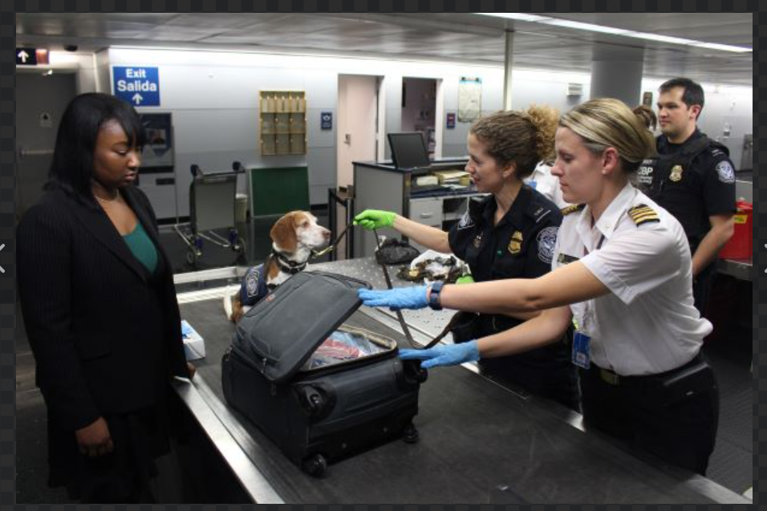
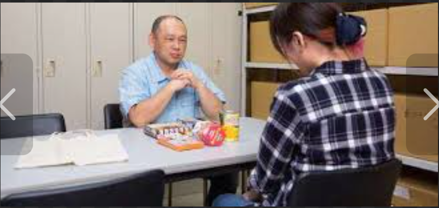
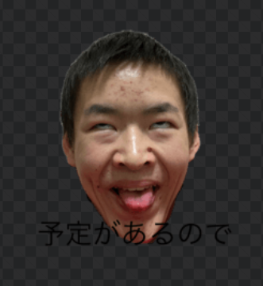
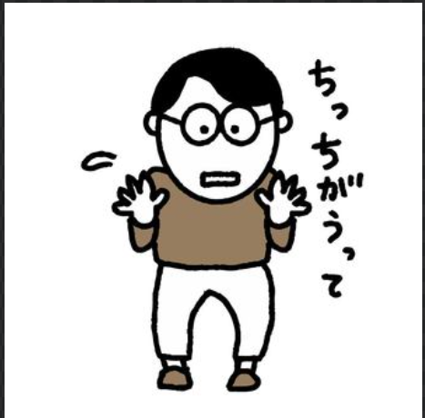
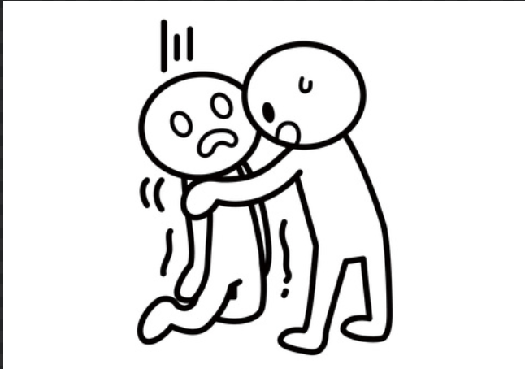
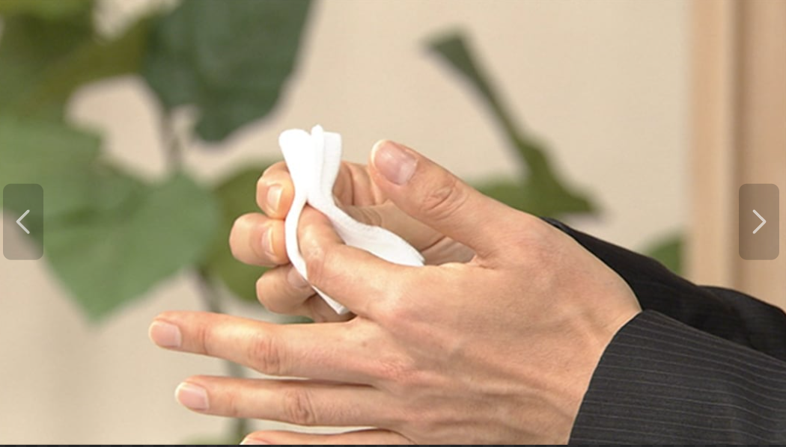
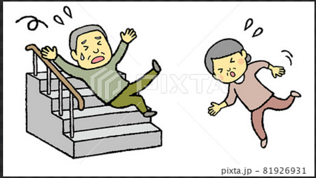
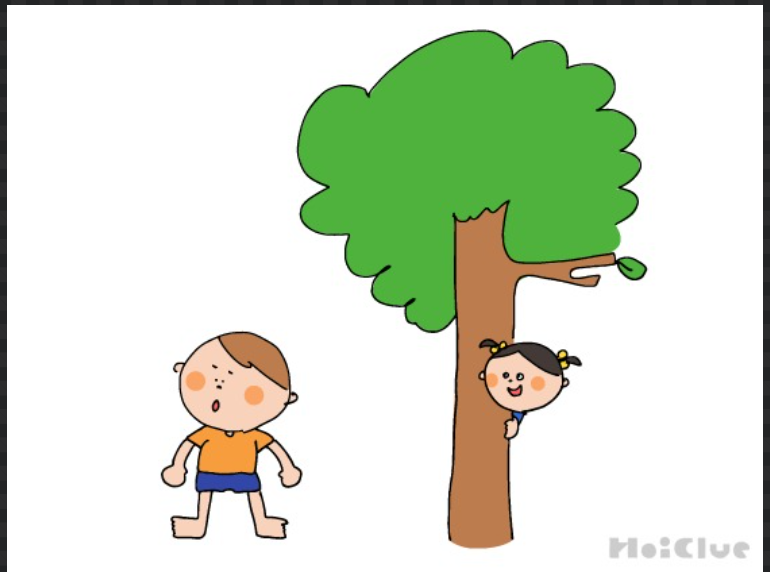
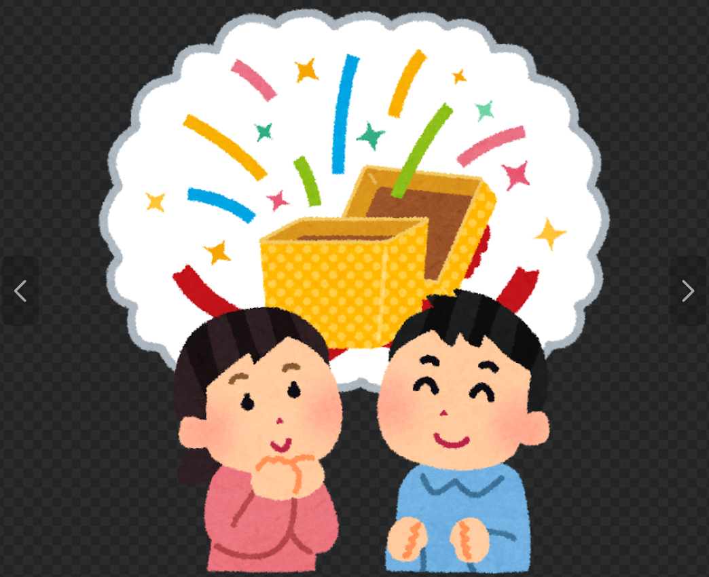
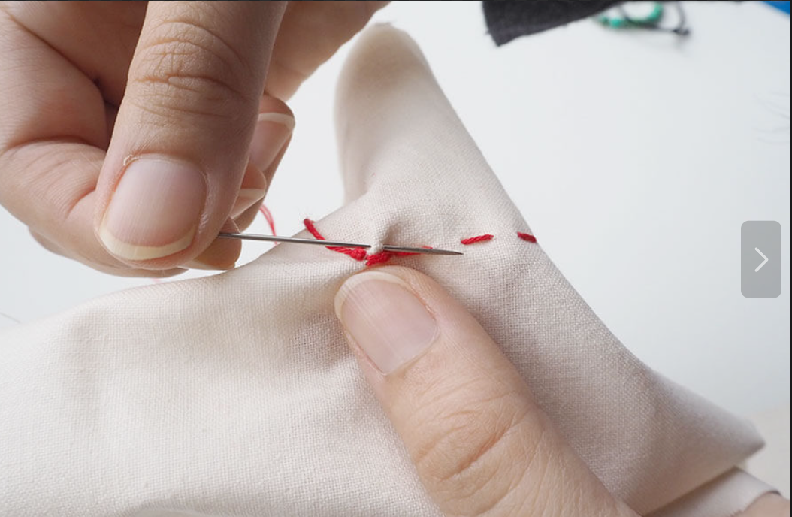

1.通路、aisle

2.異国への移住、移民。入国審査や出入国管理、immigration

3.させて、私が逃げることを、let me off the hook

4.私は店で万引きで捕まった、I got caught stealing from a store

5.私をからかっているの？、are you mocking me?

6.彼はめんどくさいやつだ、he's a pain in the neck.

7.あなたはとても意地悪だ、you are so mean!

8.私を間違っている状態にしないで(誤解しないで)、don't get me wrong.

9.何かが来た。(急用ができちゃった)、something came up.

10.悪気はない。no offense.
11.does that make sense ? それは認識を作る事ができる？(意味がわかる？)

12.I don't deserve this. 私にはふさわしくない

13.You have to pull yourself ! しっかりしなよ！
14.ant,ants 、あり

15.underneath my breath. 呼吸の表面下で、（小声で）
16.I have faith in what I see. 私は確信を持っている、私が見たものの中に

17.I have met An angel in person . 私は天使に会った、直接

18.follow my lead. ついてきて、私の案内に

19.I received a speeding fine. 私はスピード違反の罰金を受けました。

20.I broke my hand yesterday. 私は昨日手を骨折しました。
21.I will carry your suitcase. 私はあなたのスーツケースを運びます。

22.I hope you like it. 気に入っていただけると嬉しいです。

23.What time did you return? 何時に帰りましたか？

24.I sold my guitar. 私はギターを売りました。
25.I passed the test. 私は試験に合格しました。

26.She raised her sons by herself. 彼女は息子たちを一人で育てました。

27.Batman killed the Joker. バットマンはジョーカーを殺しました。

28.I can't reach . 手が届きません。

29.I cut my finger. 私は指を切りました。

30.The old man fell down the stairs. 老人は階段から落ちました。

31.Can I stay tonight? 今夜泊まってもいいですか？

32.That building was built 100 years ago. あの建物は100年前に建てられました。

33.I will send you a letter. あなたに手紙を送ります。

34.My cat died yesterday. 私の猫は昨日死にました。

35.They serve the best sushi here. 彼らは最高の寿司を提供しています、ここで。

36.I want to buy a new car. 私は新しい車を買いたいです。

37.He appeared out of nowhere. 彼はどことも知れぬ所から現れました。
38.Can you consider it? 検討してもらえますか？
39.I remember her very well. 私は彼女のことをよく覚えています。

40.What did they offer you? 彼らはあなたに何を提供、（提案）した？

41.Don't let me down. させないで、私にがっかりすることを

42.Let me out. させて、私に外に出ることを

43.Let me think させて、私に考えることを

44.Let me ask させて、私に質問することを

45.I have a special treat 私は持っている、特別の楽しみを
46.for y'all 君たちみんなのための
47.former college roommate 以前の大学のルームメイト

48.roomies 親しいルームメイト
49.the other was out chasing もう一人は外で追いかけていた
50.what I thought would be fun 私が思ったこと、楽しくなるだろうと
51.Things like the first manned mission to Mars こと、初の有人火星探査のような
52.we can set out to explore 私たちは外へ置く（始める）探索を

53.Not the least of which 最もささいではないものは（特に［とりわけ］重要なのは）

54.we launch 私たちは打ち上げる

55. letting them drop in the ocean させること、海の中に落とすを

56.The math is pretty complicated. 数学はとても複雑だ

57.I bet you could. 私は賭ける、あなたはできると

58.your mom sew that あなたのお母さんがそれを縫う
59.during liftoff 発射、（打ち上げ）の間
60.wear diapers. 着用する、おむつを

61. the old notes、旧札

62. you been through it,あなたはそれを通ってきた

63.

64.

65.

66.

67.

68.

69.

70.

71.

72.

73.

74.

75.

76.

77.

78.

79.

80.

81.

82.

83.

84.

85.

86.

87.

88.

89.

90.

91.

92.